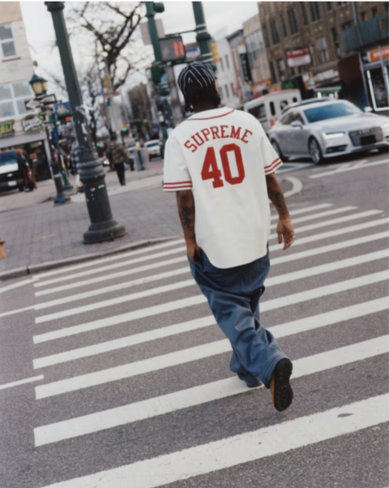
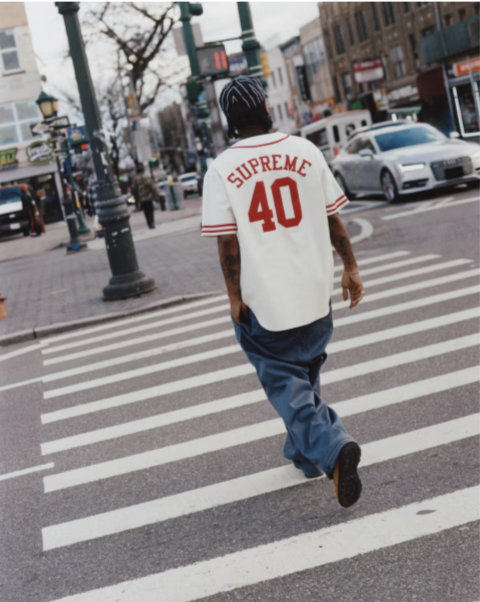

Guawanko / 40 Acres
ith a career spanning directing, producing, screenwriting and acting, Spike Lee is one of the most celebrated and prolific filmmakers working today. Born in Atlanta in 1957 and raised in Brooklyn, Lee made his directorial debut in 1986 with She’s Gotta Have It. Shot largely in black-and-white over the course of two weeks in Brooklyn, the film launched Lee as a vital and provocative voice in contemporary cinema. In the four decades since She’s Gotta Have It, Lee has written and directed over 30 films, including his enduring 1989 masterpiece Do The Right Thing, School Daze, Mo' Better Blues, Jungle Fever, Malcolm X, Crooklyn, Clockers, Chi-Raq, and BlacKkKlansman, for which he won an Academy Award in 2019.